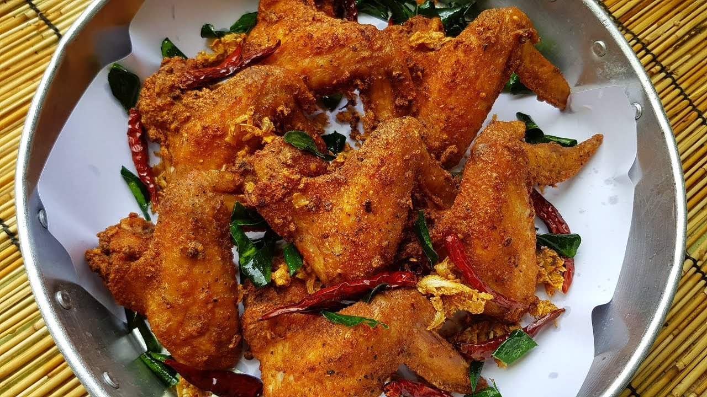

ไก่ทอดมะแขว่น
ไก่ทอดมะแขว่นเป็นไก่ทอดที่ผ่านกระบวนการหมักด้วยเกลือและมะแขว่นหมักจนเข้าเนื้อจึงนำไปทอดนิยมรับประทานคู่กับข้าวเหนียวร้อนๆ
ไก่ทอดมะแขว่นเป็นไก่ทอดที่ผ่านกระบวนการหมักด้วยเกลือและมะแขว่นหมักจนเข้าเนื้อจึงนำไปทอดนิยมรับประทานคู่กับข้าวเหนียวร้อนๆ
แกงส้มเมือง เป็นแกงรสเปรี้ยว รสเปรี้ยวนั้นมาจากน้ำมะกรูด และใบส้มป่อย เป็นแกงปลาใส่ผักต่าง ๆ เช่น ชะอม

“แกงสะนัด” สำรับโบราณอายุกว่า 100 ปี ที่หากินได้ยาก ปัจจุบันเหลือเพียงที่ “คุ้มเจ้าเมฆวดี” เพียงแห่งเดียวเท่านั้น